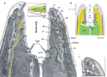
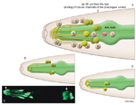
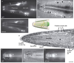
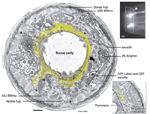
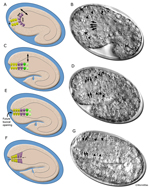
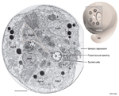
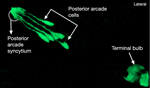

Handbook - Hermaphrodite
Epithelial System Interfacial Cells see also Hypodermis Seam Cells Atypical Cells
3 Buccal cavity
Figures  InterFIG 1 - Structure of the buccal cavity  InterFIG 2 - Anterior and posterior arcade cells  InterFIG 3 - Arcade cell bodies are located around the procorpus and anterior bulb of the pharynx  InterFIG 4 - Arcade rings  InterFIG 5 - Embryonic development of buccal cavity  InterFIG 6 - Arcade cells in tadpole stage embryo  InterMOVIE 1 - 3-D reconstruction of posterior arcade cells